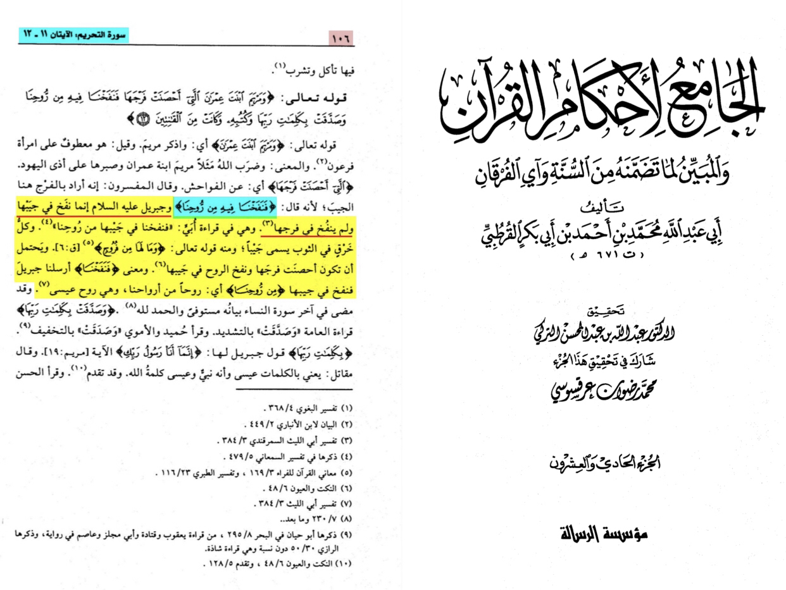

Translation: “and Gabriel may peace be upon him he blew into her garments and not the private parts and in the Quira’a of ubay it read (and we blew in her garments)”
-Source: Al-Jamī’ li ahkam al-Qūr’ān volume 21 page number 106 interpretation of 66:12

For Arabic speakers watch this
https://m.youtube.com/watch?v=ccWac4-togc